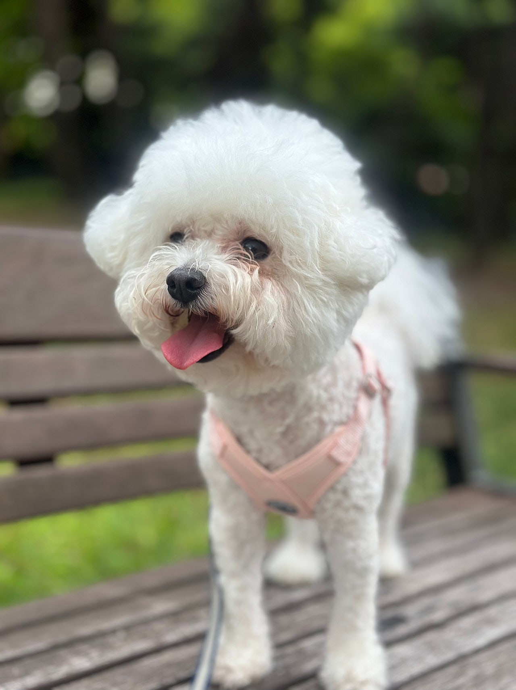
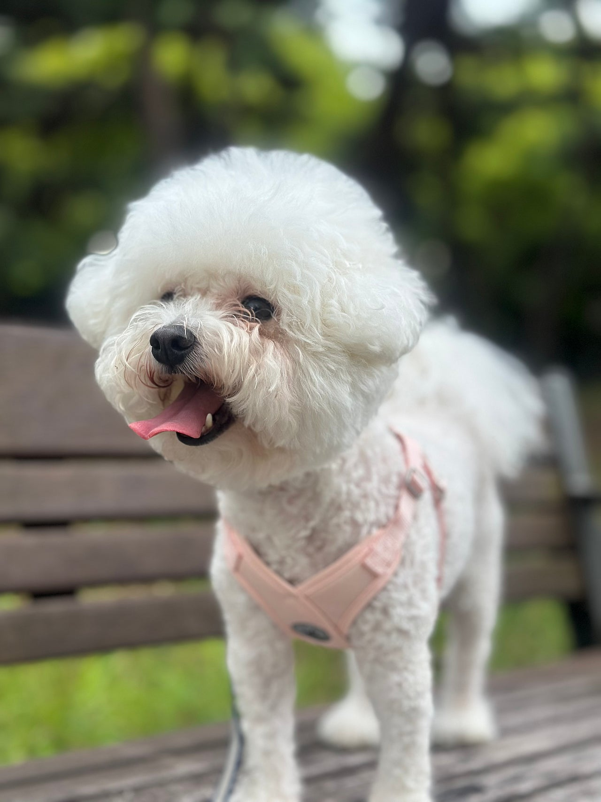
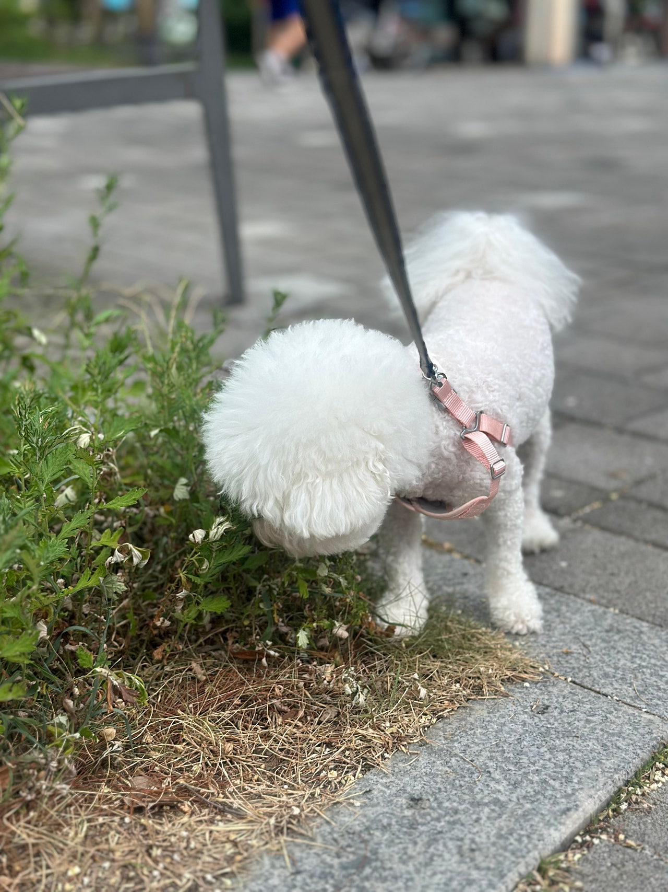
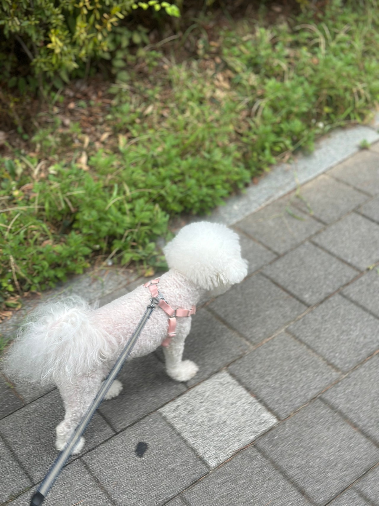
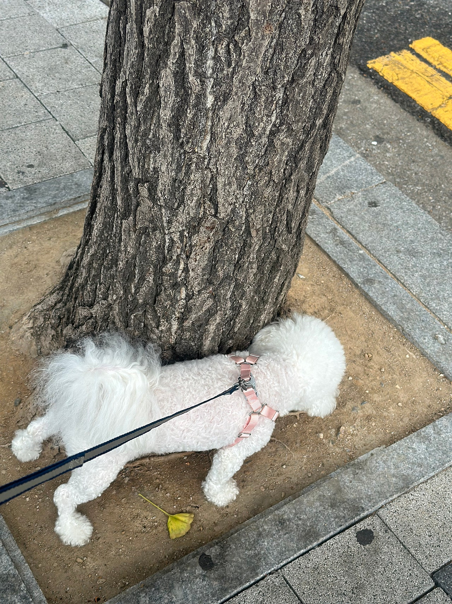
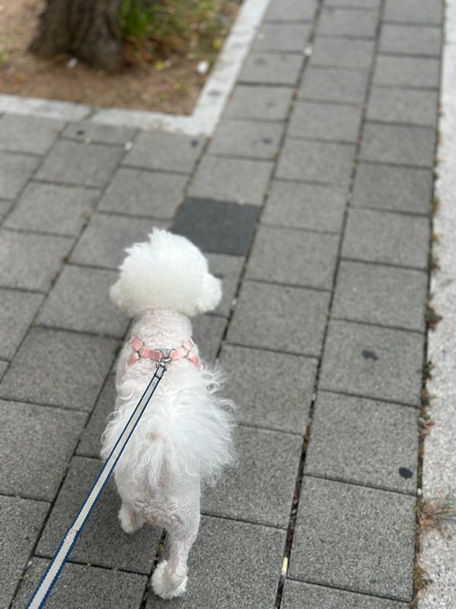

하이바를 쓴 미니비숑 슈가의 산책일기


오늘도 어김없이 돌아온산책타임~~~~!!!!오늘은 미니미니비숑 슈가와 함께 했어요슈가는 뚱이라는 딸이 있었어요뚱이는 먼저 가족을 만나 떠났고슈가만 아직 제 품에 있땁니다ㅠㅠ!!뚱이는 안보고싶은지,, 그리고 뚱이는 슈가가 안보고싶은지너무너무 궁금해요


신나게 돌아다니고 풀냄새도 킁킁 맡고끙아도 한번쌌다는,,ㅎㅎ너무 다행인게 저희 보호소 앞에엄청 큰 공원이 있다는거에요!그래서 그 공원으로 자주자주 산책을 나간답니다요즘 좀 시원해져서 다행이에요맘 편히 산책을 다녀올수 있거든요!바닥이 너무 뜨거우면 아이들 발바닥 화상을입을수 있어서 ㅠㅠ늘 걱정이였거든요 그래서 해가 없을때만 기다렸다가바로 산책을 나갔어요 ㅋㅋㅋ


눈에 넣어도 안아플 이 이쁜슈가와 다정하게 발 맞추며 매일매일기적같은 일상을 꾸려나가고 싶지 않으신가용?0505-464-1004
댓글 23
눈에 넣어도 안 아플 만큼 이쁘다는 말이 과하지 않아요.
사진 보는 동안에도 좋은 가족이 생기길 빌었어요.
미니비숑 슈가, 매일 이 공원 산책이 이어지면 좋겠어요.
슈가, 좋은 사람만 만나자.
슈가, 딸 보내고 남은 시간이 외롭지 않았으면 해요.
사랑받을 일만 남았으면 해요.
공원에서 배변도 했다는 소소한 기록이 오히려 생활처럼 보여요.
슈가, 아프지 말고 잘 자라.
시원할 때 나가는 산책이라 표정도 여유로워 보여요.
좋은 가족만 만나자.
슈가와 다정하게 발 맞출 가족이 나타나길.
가족 되는 날이 하루라도 빨리 오면 좋겠어요.
딸 뚱이는 먼저 가족을 만났고 슈가만 남았다는 글이 마음에 남아요.
댓글로나마 쓰다듬고 갑니다. 잘 자라.
미니미니비숑이라는 표현이 사진 속 크기랑 딱이에요.
슈가, 따뜻한 집에서 오래 사랑받길.
공원 산책 일기다운 사진들이에요. 풀냄새 장면이 제일 좋아요.
요즘 선선해져서 맘 편히 다녀온다는 말도 사진이랑 같이 읽혀요.
하이바가 슈가 산책 룩의 포인트네요.
보호소 앞에 큰 공원이 있어서 자주 나간다는 이야기가 반갑네요.
발바닥 화상 걱정까지 적은 글이라 사진이 더 정성스러워요.
산책타임이라는 첫 줄처럼, 정말 나가는 날이 즐거워 보여요.
뚱이가 보고 싶을지 궁금하다는 마음이 글에 그대로 있어요.